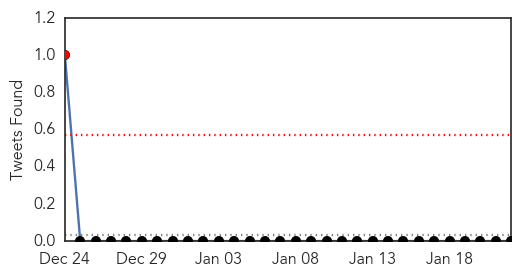
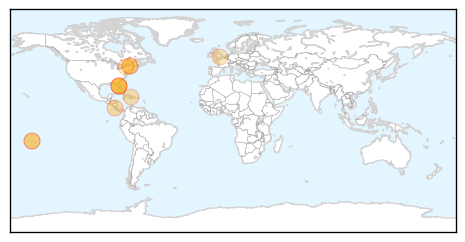

30 Day Trends
Web: 3 alerts, 0 warnings
Twitter: 1 alerts, 0 warnings
Top Articles:
- 0.998
- Lindsay Lohan Has The Disease, But What Is It?
- 0.997
- Chikungunya infections in Vermont
- 0.997
- Chikungunya updates from Honduras and Costa Rica
- 0.996
- What You Should Know About the Chikungunya Virus
- 0.981
- Pique Newsmagazine
- 0.961
- Lindsay Lohan Released from Hospital after Being Admitted with Chikungunya
- 0.947
- Mosquitos carrying Chikungunya hitchhiking to the U.S.
- 0.942
- Lindsay Lohan hospitalized for rare mosquito-borne virus
- 0.923
- State warning travelers of ailment
- 0.812
- Lindsay Lohan released from hospital
- 0.782
- Dina Lohan Worried, Begs Lindsay To Move Back To Long Island
Top Tweets:
-
No tweets found for Jan 22, 2015
Web/News Articles

Tweets
Article Locations
Article Confidences